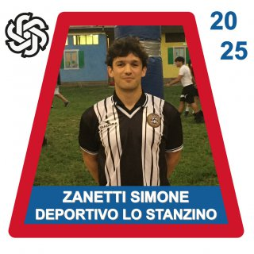

Juan Zeppinho
Midfielder
The Brain
Juan Zeppinho
Position: Midfielder
Fun stat: 94% success rate on passes nobody saw coming.
Builds impossible plays, survives impossible dribbles, and somehow always leaves two defenders arguing.
Traits: vision, chaos control, velvet first touch